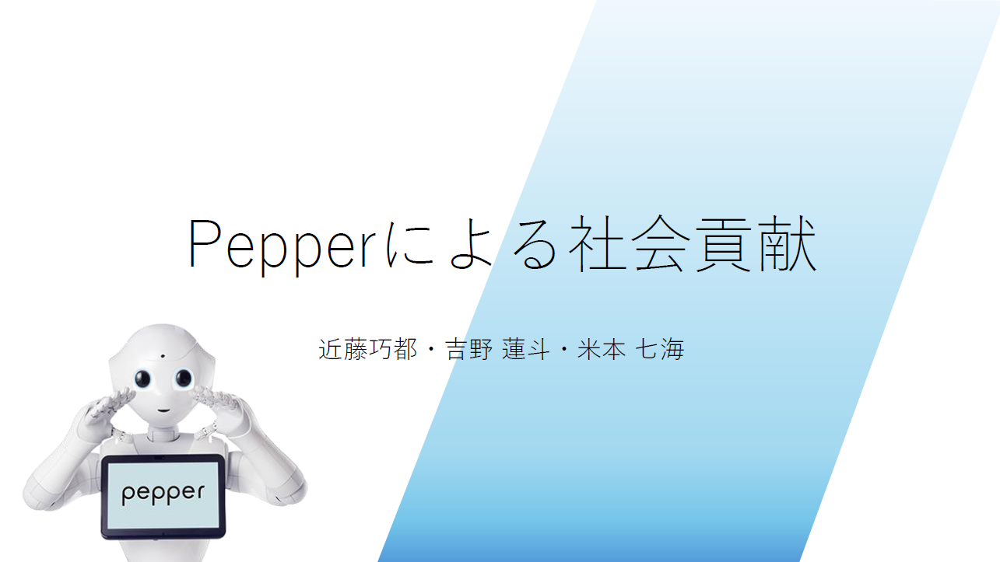
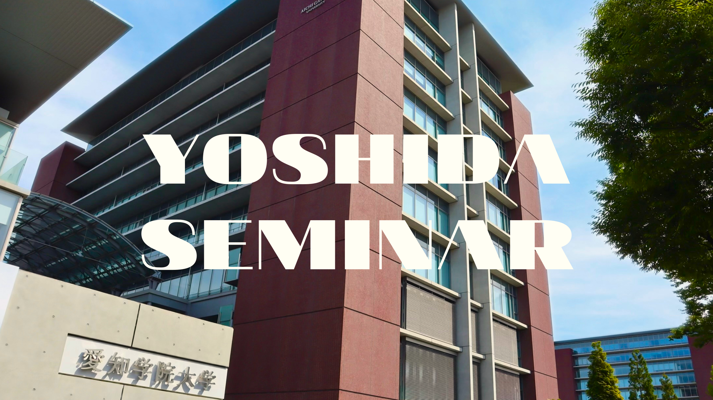
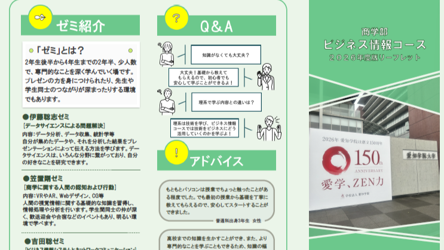
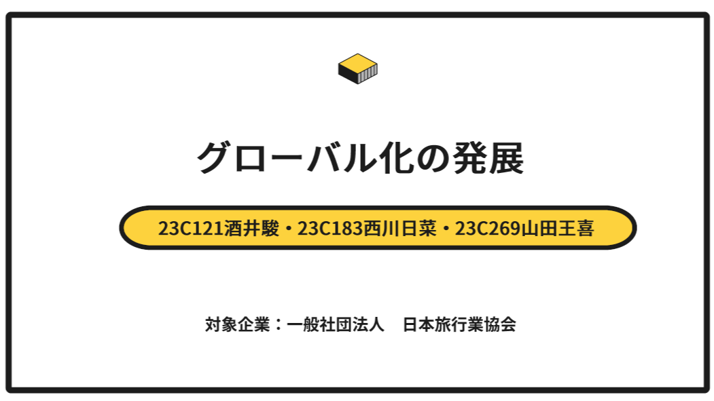

ロボットプログラミング
このグループでは、人型ロボット Pepperの活用について研究しています。
また、オープンキャンパスに参加される高校生やロボットプログラミング講座に参加される小中学生にソフトバンク社が提供するRoboBlocksを利用して、Pepperを実際に動かすロボットプログラミングを体験してもらいます。
初めてプログラミングを経験する方、保護者の方などたくさんの方に、プログラミングを楽しく学べるよう工夫し、充実した時間を提供できるように努めています。
このグループでは、人型ロボット Pepperの活用について研究しています。
また、オープンキャンパスに参加される高校生やロボットプログラミング講座に参加される小中学生にソフトバンク社が提供するRoboBlocksを利用して、Pepperを実際に動かすロボットプログラミングを体験してもらいます。
初めてプログラミングを経験する方、保護者の方などたくさんの方に、プログラミングを楽しく学べるよう工夫し、充実した時間を提供できるように努めています。

このグループでは、先端情報技術を活用して世の中が抱える様々な問題や課題について解決方法を提案していきます。
今回は農業の課題への解決方法について研究しています。 農業における重労働削減や、新規就農者増加、環境への配慮などのために生成AIとハイブリッドを活用した農業ロボットを提案内容としています。
このグループでは、吉田ゼミのWebサイトを構築をしています。
HTMLやCSSなどの言語を使って、昨年度に作成されたWebサイトの情報を更新したり、デザインを変更をしています。
ターゲットは、ゼミ所続を考えている大学２年生や愛知学院大学について調べる中高生、吉田ゼミ生、企業の方とし、
吉田ゼミで学べることや活動のスケジュールなど、興味を持ってもらいやすい内容を加えて、分かりやすく伝えられるように作成しています。
そのための、内容・構成ができるよう研究をし、専門知識を身に付けます。

このグループでは、商学部のビジネス情報コースに関するリーフレットをPublisherというソフトを利用して作成しています。
ビジネス情報コースを知らない人や他のコースと迷っている人がリーフレットを見て、このコースに興味を持ってもらうことを目標としています。
そのために、リーフレットに掲載する内容や全体のデザインなどについてメンバーとアイデアを出し合い、作成しています。
このリーフレットは、オープンキャンパスや在学生が受ける授業などで配布する予定です。
このプロジェクト研究の最大の魅力は、半年かけて作成した成果物を多くの人に見ていただけることです。 吉田ゼミに入ったら、リーフレット作成に挑戦してみてはいかがでしょうか。

このグループでは、マイナビが提供するオンライン型ビジネスコンテストの一環として、課題解決プロジェクトに取り組んでいます。
このプロジェクトでは年間を通して多様な企業や団体から与えられるテーマに対して、研究や企画を行い、提案をまとめています。
今回は、一般社団法人日本旅行業協会が提供する「益々グローバル化、ボーダーレス化が進む国際社会において、活躍できる日本人を長期的に育て続けるためのアイディアを提案してください」というテーマについて研究し、企画をまとめました。
